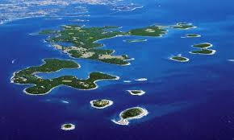

Best Croatian Islands: Kornati Islands Best For Marine Life. The Kornati Islands are ideal for anyone who wants to explore what lies beneath the Adriatic’s surface. This dense cluster of islands is home to numerous small coves, beaches, and bays where you can stop and just take a swim or enjoy the pristine environment, all within close proximity of each other.
High season: July and August. Croatia’s high season in July and August offers guaranteed sun but also guaranteed crowds, due, in part, to European schools being on summer break.
